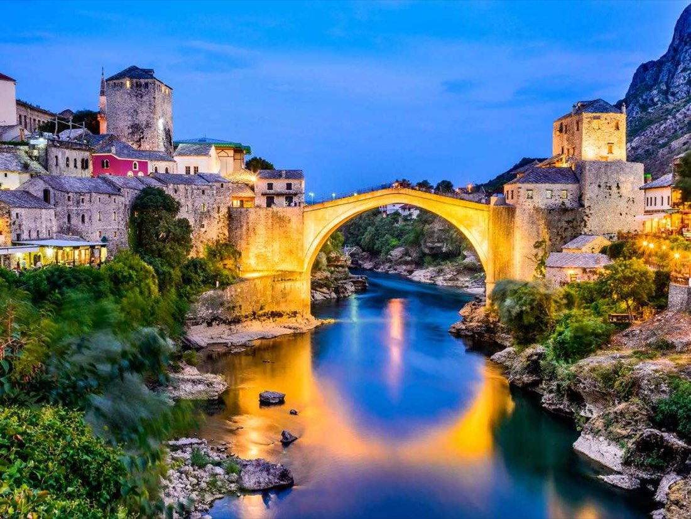

Bosna Hersek Turu
Tur bilgileri
- Tarih
- 15.07.2027 – 18.07.2027
- Süre
- 4 gün
- Güzergâh
- Saraybosna, Travnik, Ahmiç, Konjic, Blagay, Mostar
- Otel
- 5 Yıldız
- Vize
- Vizesiz
- Ulaşım
- Uçak
- Havayolu
- AJet
Rota haritası
Şehir etiketine dokunun; programın o günü açılsın.
Fiyatlar
| İki Kişilik Odada Kişi Başı (erken rezervasyon) | €750 |
|---|---|
| Tek Kişilik Oda (erken rezervasyon) | €890 |
| İlave Yatak (erken rezervasyon) | €750 |
| 0 - 1 Yaş | €250 |
|---|---|
| 2 - 5 Yaş | €675 |
| 6 - 11 Yaş | €725 |
* Erken rezervasyon fiyatıdır; erken rezervasyon koşulları için bize ulaşın.
* Fiyatlar kişi başı, EUR; tüm yurt dışı yerel vergiler dahildir.
* 3 gece / 4 gün.
Tur programı
1. Gün: İstanbul Sabiha Gökçen – Saraybosna
İstanbul Sabiha Gökçen Havalimanı Dış Hatlar Terminali Giden Yolcu Salonu "AJET" bankosunda 09.45'te buluşuyoruz. Check-in ve pasaport işlemlerini müteakip 12.45'te Saraybosna'ya uçuyoruz. Varış: 12.50. (Uçuş saatleri havayoluna bağlı olarak değişebilir.) Rehberimiz tarafından karşılanmanın ardından Başçarşı'ya hareket ediyoruz. Yol üzerinde savaş zamanı yapılan bombardımanın izleri bulunan binaları, Avrupa’nın ilk elektrik motorlu tramvay hattı olan ve Saraybosna’yı baştan başa dolaşan tramvay hattını, Tito dönemi Yugoslavya Halk Ordusu’na ait ancak günümüzde Saraybosna Üniversitesi kampüsü olarak kullanılan binaları, ABD’nin dünyanın en büyük ikinci büyükelçiliği binasını, Saraybosna şehir müzesini, Parlamento Binası'nı, Arap yatırımcılar tarafından yapılan ve bölgenin en büyük AVM'sini görerek Başçarşı’ya varıyoruz. Başçarşı ve çevresinde yapacağımız şehir turumuzda Bosna Hersek’in ilk cumhurbaşkanı Aliya İzzetbegoviç'in Kabri, Sebil, Bakırcılar Sokağı, Moriça Han ve içerisinde bulunan Genç Müslümanlar Teşkilatı Lokali "Mladi Muslimani", Kanuni Sultan Süleyman'ın halasının oğlu Gazi Hüsrev Bey Camisi, Saat Kulesi, Kurşunlu Medresesi, Birinci Dünya Savaşı'nın çıktığı Latin (Hünkar) Köprüsü, Fatih Sultan Mehmet adına yaptırılan Hünkar Camisi, Ortodoks Kilisesi, Alija İzzetbegoviç Parkı ve parkta sürekli satranç oynayan Saraybosnalı emekliler, Ferhadiye Camisi, Ferhadiye Caddesi (Saraybosna’nın İstiklal Caddesi), Sinagog, Katolik Kilisesi, Saraybosna gülleri (savaş zamanı bir bomba ile birden fazla kişinin hayatını kaybettiği noktalar), fırın yeri katliamının yapıldığı nokta, sönmeyen ateş, Pazar yeri katliamı olarak anılan ve 68 kişinin hayatını kaybettiği Markale Semt Pazarı, Avusturya – Macaristan döneminde Hükümet Konağı (Belediye Binası) olarak yaptırılan ve savaş dönemi yakılarak birçok el yazması eserin kül olmasına neden olan Vjecnica Kütüphanesi görülecek yerler arasındadır. Gezimizin ardından Başçarşı'da alacağımız akşam yemeği sonrası konaklama otelimizde.
2. Gün: Saraybosna – Travnik – Ahmiç – Saraybosna
Otelde alacağımız kahvaltının ardından vezirler şehri olarak anılan Travnik şehrine hareket ediyoruz (90 km). Varışta yapacağımız şehir turumuzda Tarihi Osmanlı Kalesi ve kaleden şehir manzarası, 300 yıllık İbrahim Paşa Medresesi, Fatih Sultan Mehmet'in su içtiği Plava Voda (Göksu Nehri ve kaynağı), Alaca Camisi, Travnik Çarşısı ve Saat Kulesi görülecek yerler arasındadır. Gezimizin ardından Ahmiç Köyü'ne doğru yola çıkıyoruz (20 km). Savaş sırasında birçok insanın şehit edildiği Ahmiç Köyü'nü ziyaretin ardından Saraybosna'ya hareket ediyoruz (70 km). Akşam yemeği sonrası konaklama otelimizde.
3. Gün: Saraybosna – Konjic – Blagay – Mostar – Saraybosna
Otelde alacağımız kahvaltının ardından Konjic şehrine hareket ediyoruz (50 km). Konjic Köprüsü ve Kırık Minareli Cami'yi gördükten sonra Buna Nehri kaynağına kurulmuş olan Blagay Alperenler Tekkesi'ne hareket ediyoruz (80 km). Sarı Saltuk Tekkesi olarak da bilinen tekkeyi ziyaretimizin ardından Mostar'a doğru yola çıkıyoruz (12 km). Varışta yapacağımız şehir turumuzda Mostar Çarşısı, Tarihi Koski Mehmet Bey Camisi, Tarihi Mostar Köprüsü ve Tara Kulesi görülecek yerler arasındadır. Gezimizi müteakip Yablanitsa'da akşam yemeğinde meşhur kuzu çevirme ziyafeti sonrası Saraybosna'ya dönüşün ardından konaklama otelimizde.
4. Gün: Saraybosna – İstanbul Sabiha Gökçen
Otelde alacağımız kahvaltının ardından turumuza Saraybosna'nın su kaynağı Igman Dağı'nın eteklerindeki Vrelo Bosna'da gezinti ile başlıyoruz. Tarihi Rimski Köprüsü'nü gördükten sonra savaş zamanı iki buçuk yıl şehrin bütün ihtiyaçlarının karşılandığı, şehre giriş çıkışların yapıldığı Tünel'i ve müzesini ziyaret ediyoruz. Gezimizin ardından dönüş için Saraybosna Havalimanı'na hareket ediyoruz. Check-in ve pasaport işlemlerinin ardından AJET'in seferi ile 13.50'de İstanbul'a uçuyoruz. Varış: 17.45. (Uçuş saatleri havayoluna bağlı olarak değişebilir.)
Fiyata dahil olanlar
- İstanbul / Saraybosna / İstanbul gidiş-dönüş ekonomi sınıfı uçak bileti ve vergileri
- 3 gece 5* Malak Regency Hotel, 5* Hills Hotel vb. otelde konaklama
- 3 kahvaltı ve 3 akşam yemeği
- Travnik Kalesi, Blagay Tekkesi, Vrelo Bosna, Yaşam Tüneli giriş ücretleri
- Programda adı geçen tüm transferler
- Türkçe rehberlik hizmeti
- Seyahat sigortası
- Tüm yurt dışı yerel vergiler
Fiyata dahil olmayanlar
- Öğle yemekleri ve yemeklerde alınan su ve kapalı içecekler
- Diğer şehirlerden İstanbul'a iç hat bağlantı uçuşu ücreti
- Yurt dışı çıkış harcı
- Program dışı talep edilecek turlar
- Otel ekstraları (oda servisleri, telefon vb.), bahşiş
- Programda dahil olduğu açıkça belirtilmemiş her türlü hizmet